Chemist, 24. Moving to Zurich in November for a PhD.
Looking for a room in a shared flat.
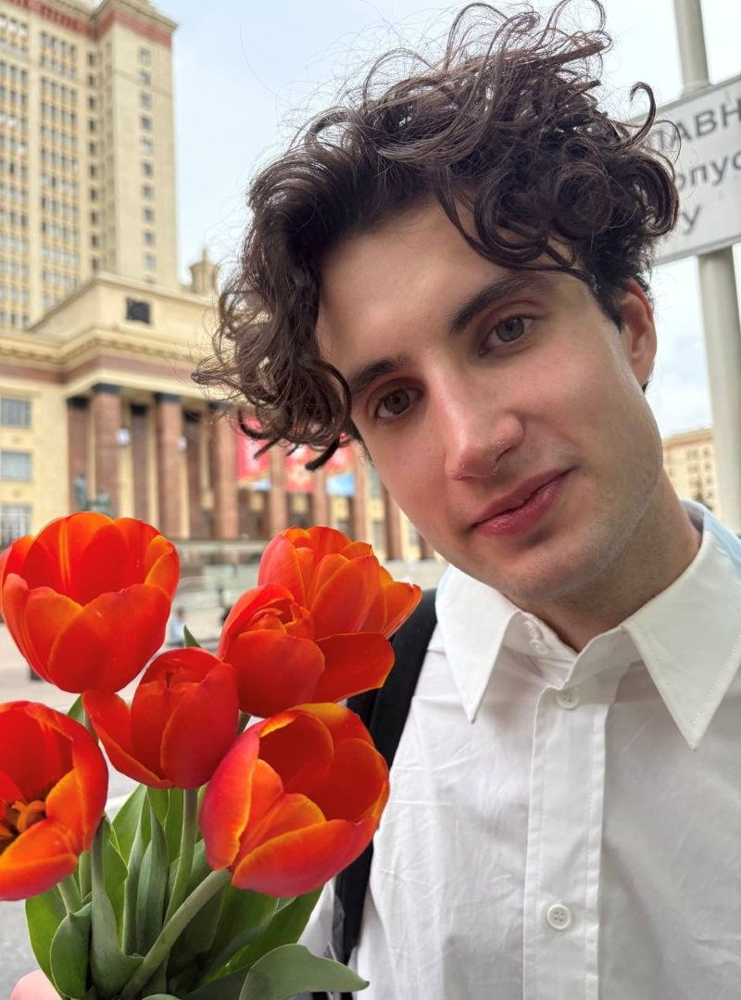
Hi, I’m Aleksandr. I’m 24. In June I finished my master’s in chemistry at Moscow State University, and in November I’m moving to Zurich to start a PhD at the University of Zurich.
I’ve been working in a lab since I was 18, mostly organic synthesis and catalysis. Six years of more or less the same thing, which probably makes me sound like a nerd. I’d argue I’m only a nerd about certain things.
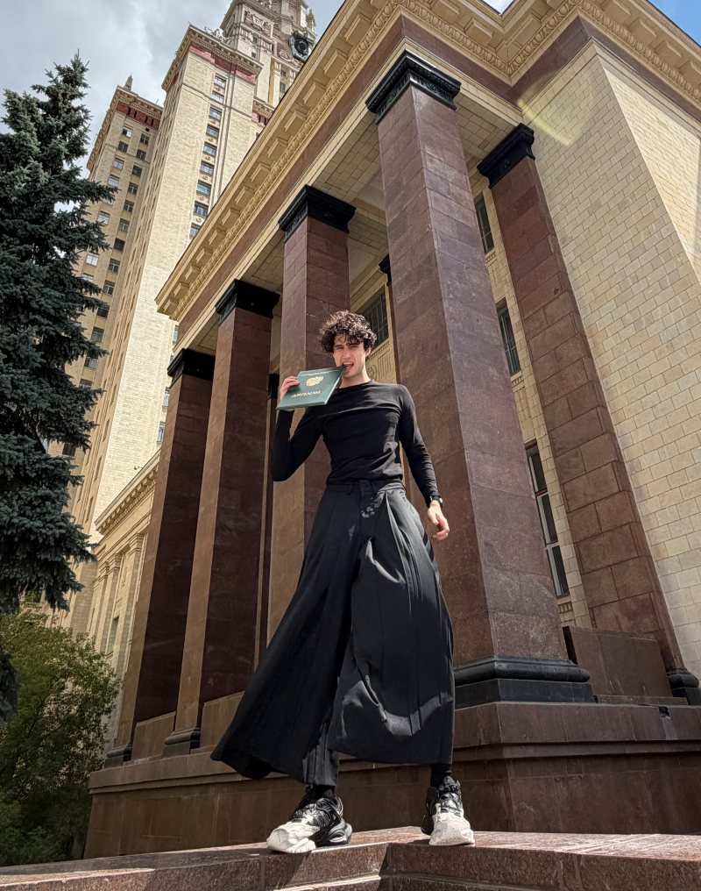
For the PhD I’ll be making molecules that behave like very small magnets. The hope is that molecules like these could one day hold information inside quantum computers. In practice it’s less dramatic than that sounds. Most days are glassware, fume hoods, patience, and things that don’t work. That’s also why my evenings start late.
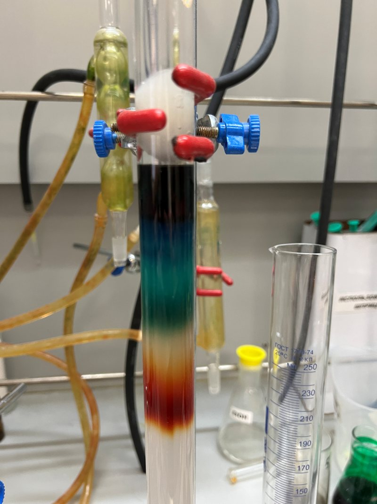
Outside work I walk a lot. Last summer I did 100,000 steps in one day around Moscow, mostly to find out whether I could. Nothing on that scale on a weekday, but I’m usually up for a walk after work.
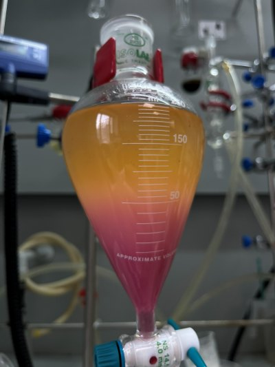
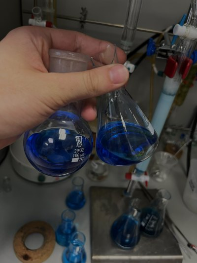
I’m usually in the lab until seven or eight and home by nine. Then I cook and put something on, usually YouTube or a podcast, sometimes an esports tournament if one is running. Most of what I make is simple. Chicken and rice, pasta, beef when I feel like it, although I gather beef in Zurich costs roughly what my share of the rent will. Every so often I get more ambitious and make sushi, or very good burgers, or bake something, or cook something Russian.
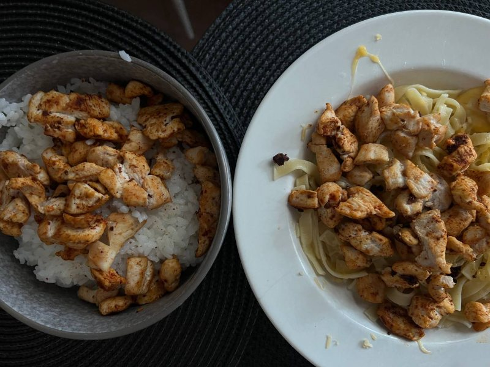
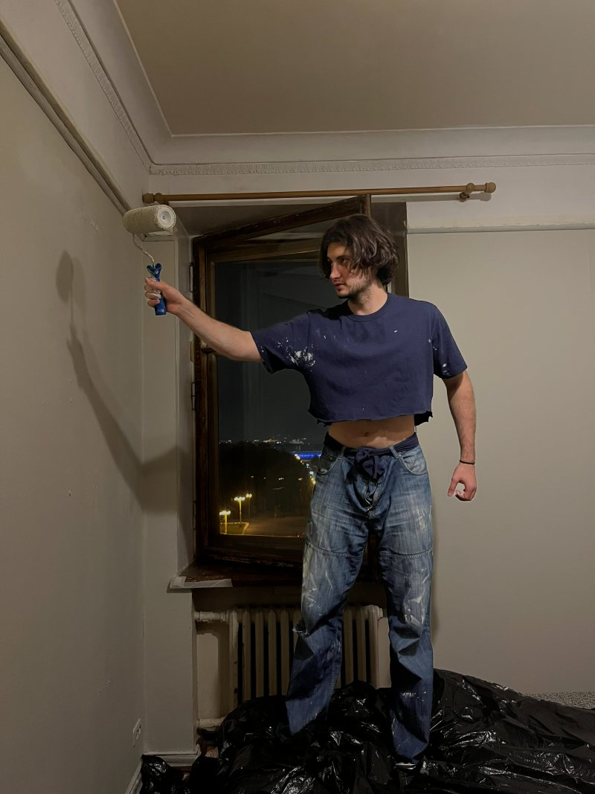
Some evenings I go for a run instead. I ran a marathon three months ago and I’ll probably run another one, so one weekend morning usually disappears into a long run. Sometimes the run happens at six in the morning rather than at night, so my mornings move around a lot. And before any of it I did kickboxing right through school, competitively enough to win the Russian championship. That’s the part nobody ever guesses.
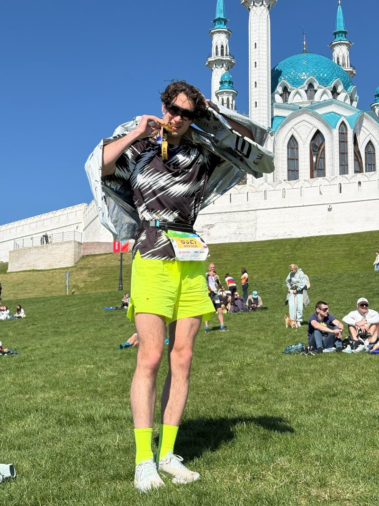
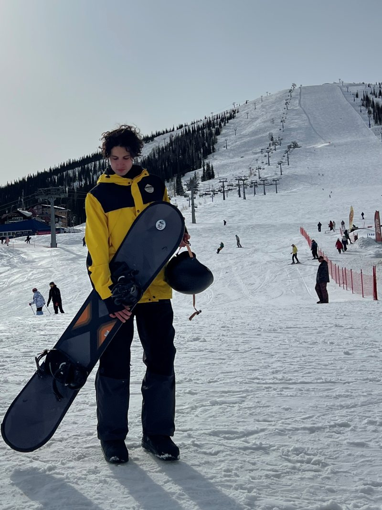
The next thing I want is a bike, ideally one I can commute to work on. If you know where to find a decent second-hand one in Zurich, I’m listening.
I’ve done this before. For my first years at university I shared a room with one other person, and after that a flat with three. We had a rota for the bathroom, everyone cleaned up after their own cooking, everyone bought their own food, and every so often one of us would cook properly and we’d all eat together. From what I know, that isn’t far off how a WG here works.
I like things where they belong, and I’ll usually wash up before I sit down. I’m not going to be the person leaving notes on the fridge. If the bin is full I’ll take it out.
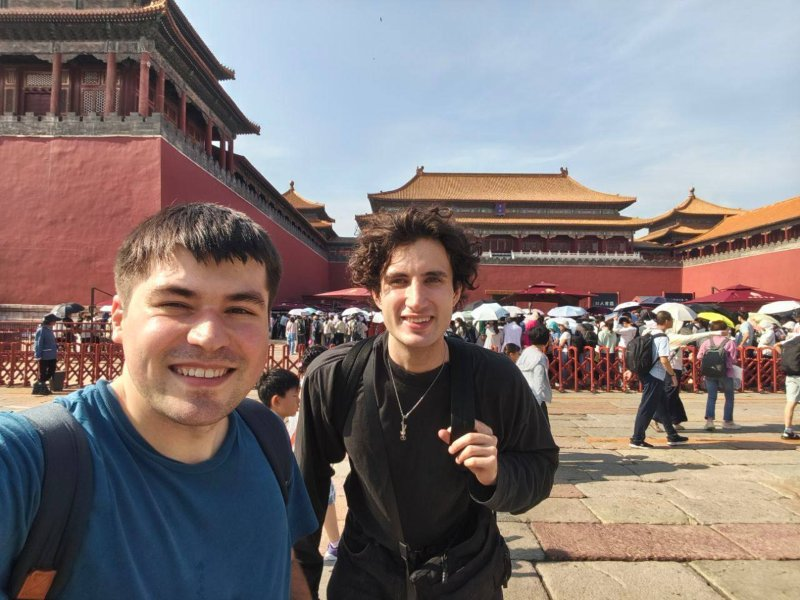
I’m quiet on weeknights and have someone over maybe once a month. Since my hours are all over the place, I’m rarely the one holding up the bathroom in the morning.
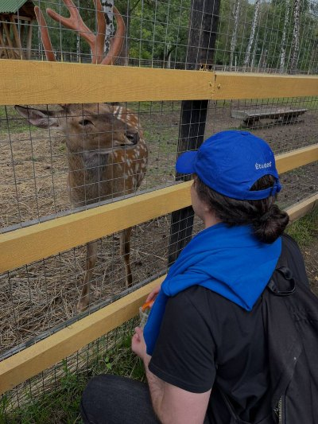
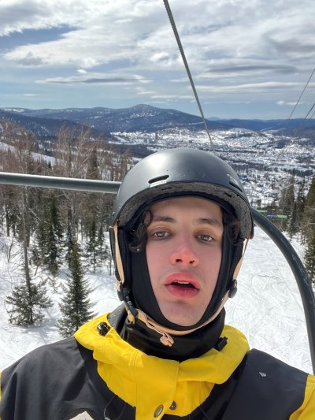
What I’m hoping for is a flat where people mostly get on with their own lives and still end up talking in the kitchen, and where now and then someone says let’s cook something, or watch something. Not everyone eating alone in their room, but not being expected at every dinner either.
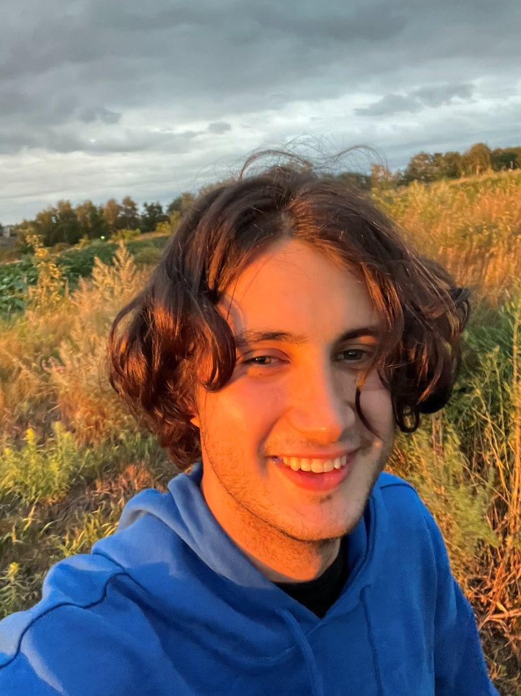
I want to hike and see the country properly. Learn German for real, not just enough to get by. Work out which coffee places are worth going back to. And finally get to a techno festival, which is where I’d rather keep the loud music.
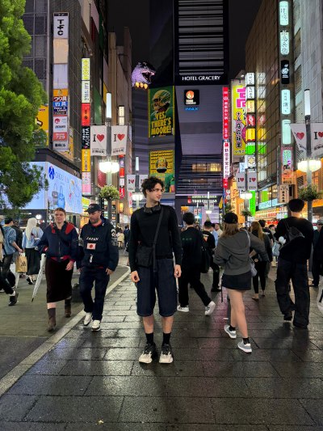
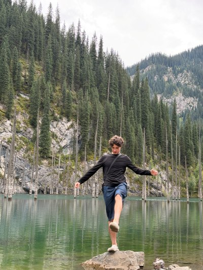
There’s also a slightly silly long-term goal. I want to have visited every country in Europe by the time the PhD is finished. Switzerland, Germany, France and Italy first, for obvious reasons.
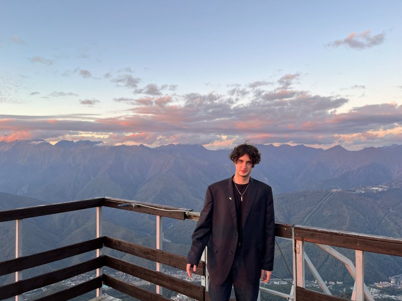
If it sounds like I’d fit, write to me and let’s talk. A ten-minute call will tell you more than any website.
das200261@gmail.com
+7 950 339 05 92 on WhatsApp or Telegram
LinkedIn